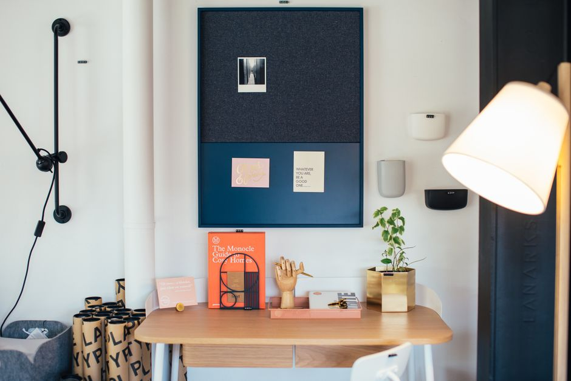

Revolutionizing Your Small Desk with 5 Innovative Storage Solutions

Photo: Rachel Claire / Pexels
Do you struggle to keep your workspace neat and tidy? A cluttered desk can not only be unattractive but also hinder your productivity. With a few innovative storage solutions, you can transform your small desk into an organized and efficient workspace. Here are five practical and actionable tips to help you maximize your space.
1. Install a Wall Shelf with Pegs
A wall-mounted shelf with pegs can be an excellent solution for storing items vertically. Measure the height of your desk and install a shelf at a comfortable height, about 1.5 meters (5 feet) above the floor. This height ensures that you can reach the shelf without bending too much. Place pegs at intervals of 25 cm (10 inches) to hang files, folders, or other office supplies. For example, you can hang your least frequently used documents on the higher pegs and your most commonly used ones closer to the desk.
2. Utilize Under-Slab Storage
If you have a desk with a slidable base, consider converting it into a storage space. Purchase a set of drawer dividers and place them in the base of the desk. This will help you categorize items such as pens, sticky notes, and small electronic devices. Store these items in quantities of 20-30 per type, keeping only what you need for the day. This method not only keeps your desk tidy but also ensures that you always have the necessary tools at hand.
3. Incorporate a Vertical File Holder
A vertical file holder can be a game-changer for your small desk. Install one on the side of your desk and fill it with hanging files. This not only frees up space on your desk but also makes it easier to find and access documents. Place files according to their frequency of use—more frequently used documents should be closer to the top. For instance, you could have the most important reports at the top and less critical ones below.
4. Use a Desktop Drawer Organizer
A desktop drawer organizer can be a versatile addition to your desk. Place one in the middle of your desk, where you can easily reach it. Use it to store items such as paper clips, pushpins, and scissors. Organize these items into small compartments or clear containers. Label each container to ensure that you can find what you need quickly. For example, you could have a compartment for each type of paper clip, making it easy to grab the right one for any task.
5. Implement a Cable Management Solution
Keeping cables tidy is crucial for a clutter-free desk. Use a cable organizer to keep all your cables neat and organized. Place it under the desk or along the sides, depending on the space available. Group cables by their purpose and use clips to secure them to the underside of the desk. For instance, you could keep power cords for your computer in one bundle and data cables for your printer in another. This not only looks neat but also prevents tangling and potential damage.
By implementing these five storage solutions, you can transform your small desk into a more organized and productive workspace. Each solution is practical, actionable, and designed to fit within the constraints of a limited space. Start with one or two of these ideas and gradually incorporate more as you see the benefits.
 Example: A home office with a wall-mounted shelf, under-slab storage, vertical file holder, desktop drawer organizer, and cable management solution.
Example: A home office with a wall-mounted shelf, under-slab storage, vertical file holder, desktop drawer organizer, and cable management solution.
Recommended products
As an Amazon Associate, I earn from qualifying purchases.